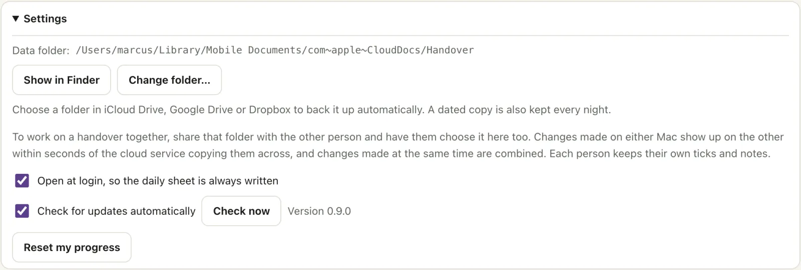
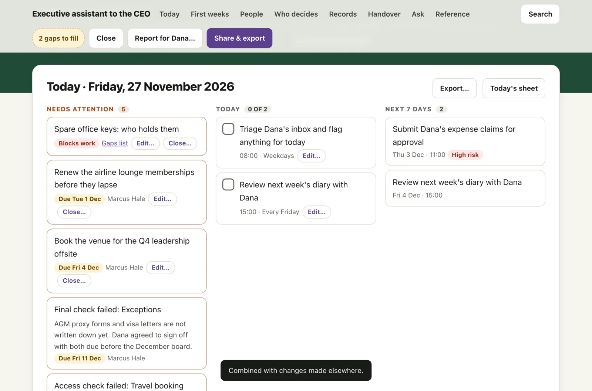
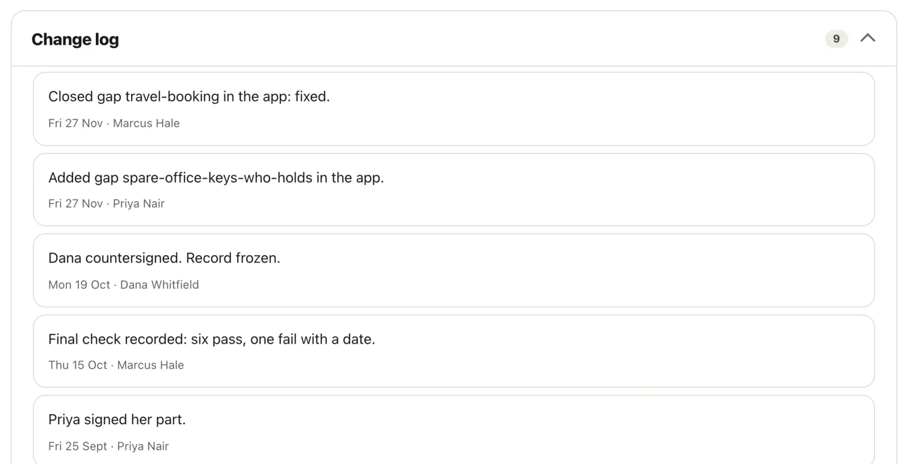

From download to day one
Five steps. The outgoing person does steps 2 and 3; the new person does the rest.
Download the app
Open
Handover.dmgand drag Handover to Applications.Write the file with AI
Copy the prompt into Claude, ChatGPT or Gemini. It interviews you about the role, one question at a time, then writes the handover file. Using an AI agent? Install the skill instead.
Save it as a .handover file
Save the AI's answer as
role.handover. Anything it didn't know is marked as a gap, so you can fill it in later.Open it in Handover
Double-click the file, or drop it on the app. If something's wrong, the app says exactly what, so the AI can fix it.
Run the role from it
Follow the first-month path, tick off today's duties and search when you need an answer. Share the file with the next person, or export it with your progress.
What the app does
It reads the file and does the rest.
A guided first month
Stages with checklists. "You are here" moves on as you tick tasks off.
Today, overdue, coming up
Daily, weekly, monthly, quarterly and yearly duties appear on the right day. Anything missed stays visible.
A task sheet every morning
The day's list is saved as a document at 7:00, ready to print or send.
Reminders
A notification each morning with what's to do, and another when a job with a time is due. Click Done to tick it off.
On your iPhone
Keep the regular jobs in an Apple Reminders list. Tick one off on your phone and it's ticked in the app, and the other way round.
Work on it together
Share the data folder in iCloud Drive, Google Drive or Dropbox. Changes reach the other Mac in seconds, and edits made at the same time are combined. See how.
Correct anything
Edit any task, regular job or record that isn't right. It keeps its place and its ticks, and the change goes in the change log.
Ask first
One search box covers the path, the answers and every reference section.
Private and backed up
No account, no server, no tracking. Your files stay in a folder you choose, and a dated copy is kept every night.
Stays up to date
The app checks for new versions and installs them in one click, after checking they're genuine.
Work on a handover together
The outgoing and incoming person can both work in the same handover, each on their own Mac. A folder you already share in iCloud Drive, Google Drive or Dropbox carries the changes. There's no server and no account.
handovers/role.handoverOne file, sharedprogress/role.priya.jsonPriya's ticks and notesprogress/role.marcus.jsonMarcus's ticks and notesbackups/A dated copy every night
Set it up in a minute
Move the data folder
In Handover, open Settings › Change folder… and choose a folder in iCloud Drive, Google Drive or Dropbox.
Share the folder
Share that folder, not just the file, with the other person from Finder or the cloud service.
They choose it too
The other person picks the same folder in Settings › Change folder…. The handover is there, and each of you keeps your own ticks.

When you both change it at once
A save never overwrites the other person's work. Before it writes, the app checks whether the file changed since it last read it. If it did, the app combines the two, item by item.
- Both Macs
The same starting point
Priya and Marcus have the same copy of the handover open.
role.handover · gapsTravel portal accessOpen - Priya
Priya adds a gap
Her save reaches the shared folder a few seconds later.
Priya's copyTravel portal accessOpenSpare office keysAdded - Marcus
Marcus closes another
He closes the travel portal gap before his Mac has seen Priya's save.
Marcus's copyTravel portal accessClosed - Marcus's save
Combined, nothing lost
The file changed in the meantime, so the app merges both changes and says so.
role.handover · gapsTravel portal accessClosedSpare office keysOpenCombined with changes made elsewhere.


What else to know
- The same field, changed twiceIf you both changed the same field of the same item, your version is kept and the app tells you which field, so you can check it.
- Extra copies are folded inWhen a cloud service keeps two copies side by side, such as iCloud's conflict versions or a "conflicted copy" file, the app merges the extra one in and moves it to
backups/conflicts. - Your own ticksTicks, notes and your start date are saved per person, so one person's progress never changes the other's.
Let your AI agent do the writing
The handover skill teaches Claude Code and other coding agents the format. Install it once and ask in plain words: "turn my notes into a handover", "what's missing from this handover?", "is payroll on the right day?"
npx skills add incrhst/handover
Interview and write
It asks the outgoing person about the role, one question at a time, then writes a complete file.
Convert what you have
Notes, an SOP, a wiki page or an old handover document become a path, duties, answers and reference sections, in your own words.
Check and fill gaps
It validates the file, fixes every error it finds and lists what's still missing, so you can answer each one.
Preview the schedule
It shows what's due on any date, so you can confirm that "the last day of the month" means what you think.
Update safely
It changes content without breaking anyone's ticks, and keeps extension fields other tools rely on.
Share and merge
It removes progress before you share a file with someone new, merges progress into a newer version, and combines two copies of a handover that were changed apart.
An open format
A handover file is plain JSON with a published schema, so any tool can read it, write it or build on it.
For people and tools
- The specification (version 1.3; every 1.0, 1.1 and 1.2 file is still valid)
- JSON Schema:
https://incrhst.github.io/handover/schema/v1.json, always the newest 1.x. Frozen copies: 1.0, 1.1, 1.2, 1.3 - Examples: an executive assistant handover with no overlap (1.2, the full record: the role, people, plan, risks, who decides what and sign-off), and a simpler operations lead handover (1.0)
- Source code for the app, the format and the skill
For developers
The skill ships the reference implementation, core.js: validation with reference checks, schedules, gap counts, export profiles and progress merging, with no dependencies. It runs in Node and in browsers, and it powers the app too.
node scripts/handover.cjs check role.handover node scripts/handover.cjs due role.handover 2026-12-01 node scripts/handover.cjs strip role.handover new.handover --profile newcomer